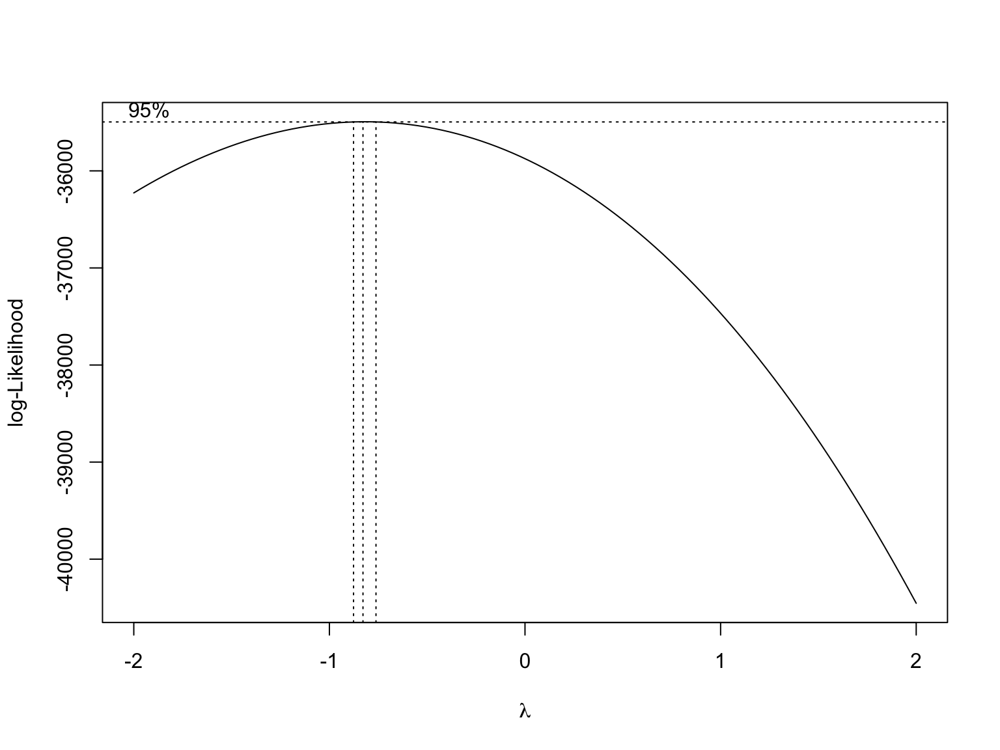
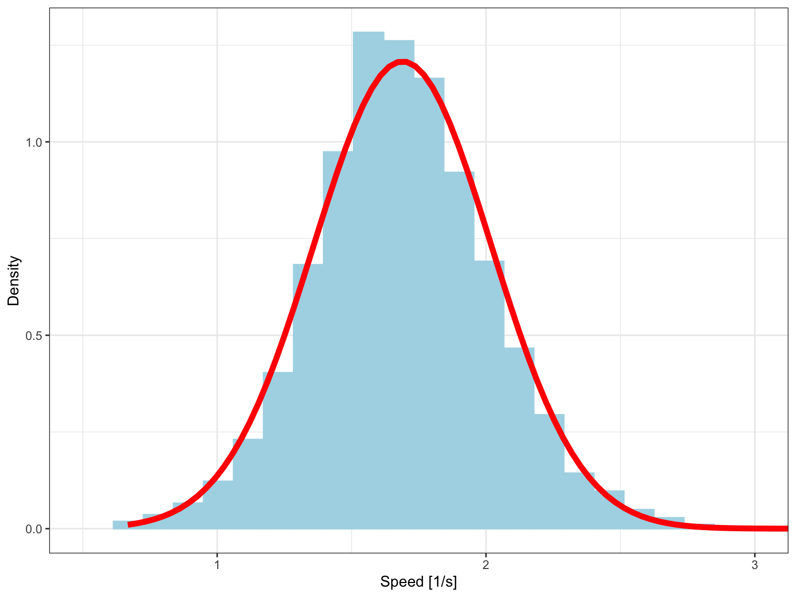
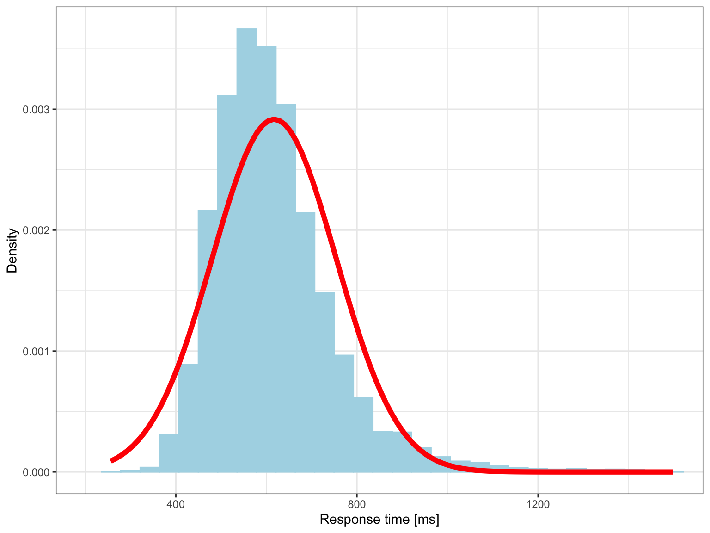
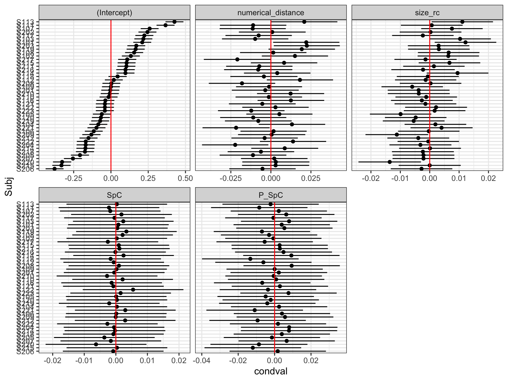
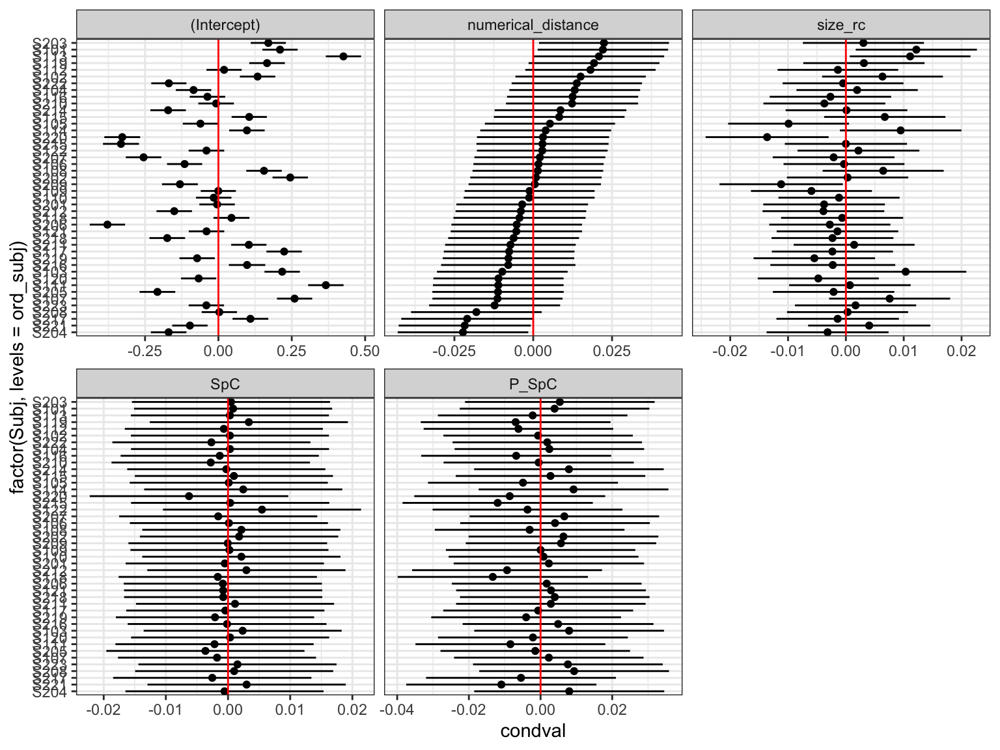
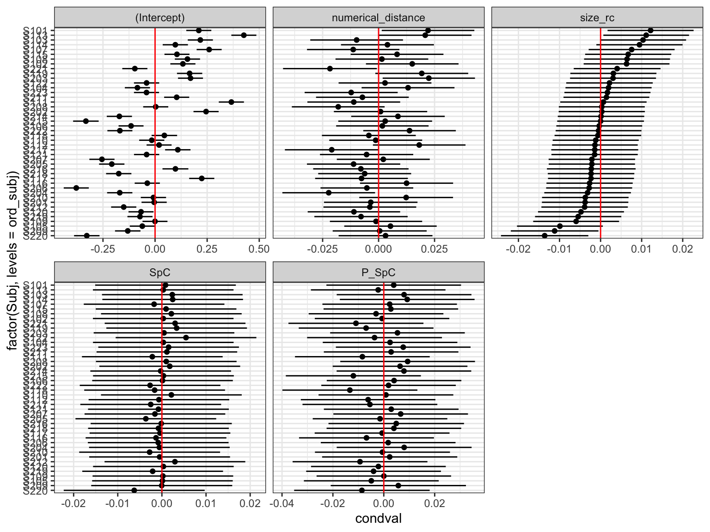
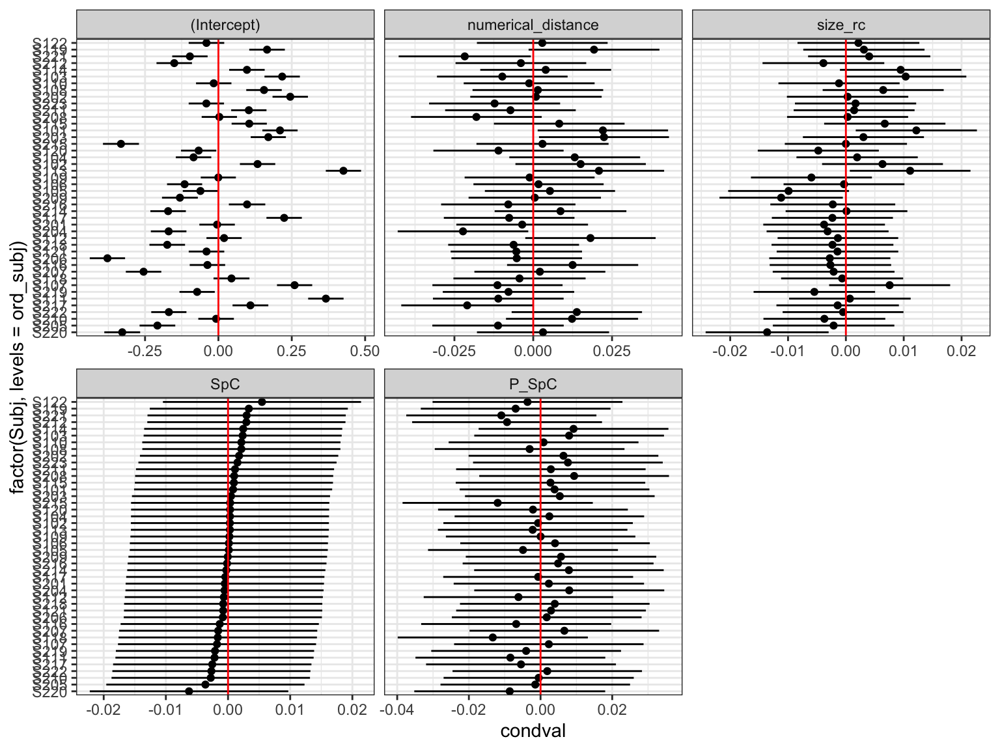

library(arrow)
library(tidyverse)
library(easystats)
library(lme4)
library(summarytools)
# respecting color vision deficiency
cbPalette <- c( "#0072B2", "#D55E00", "#009E73", "#CC79A7",
"#F0E442", "#56B4E9", "#999999", "#E69F00")Oliver Lindemann: Two attributes of numerical meaning
1 Description
The study aims to examine the interactions of space- and size-congruity effects while number processing.
The numbers 1 to 9 (\(N\)) were presented in different six font sizes (\(V_\text{size}=[-3, -2, -1, 1, 2, 3]\)) and at six different stimulus locations (three left and three right from screen center, \(V_\text{space}=[-3, -2, -1, 1, 2, 3]\)). For each trial, a size and space-congruity parameter, \(C\), could be calculated that varies between \(-1\) and \(+1\) (see formula below).
The mixed effect model of the reaction times aims to consider, beside these two congruity parameters and their interaction, also the size- or space-congruity in the previous trial (\(n-1\), ‘Gratton effect’).
Congruity was defined as \[C = \frac{V}{3} \cdot \frac{N-5}{4} = \frac{V(N-5)}{12}\]
2 Data
2.1 Code book (of the relevant vaiables)
Subject: Subject IDdigit: Presented digit (1 to 9, except 5)rt: Reaction time in mssize_rc: Stimulus size (-3 to +3) (recalculated)pos_rc: Stimulus position (-3 to +3) (recalculated)numerical_distance: Distance to 5 (abs(5-digit))SiC: Size congruity parameter (-1 to +1)SpC: Spatial congruity parameter (-1 to +1)P_SiC: Size congruity of the previous trial (-1 to +1)P_SpC: Spatial congruity of the previous trial (-1 to +1)
2.2 Data preprocessing
2.3 Residual distribution -> speed
Check the distributions of
MASS::boxcox(rt ~1+numerical_distance+size_rc+SpC+Subj, data=dat)
dat$speed <- 1000/dat$rt
# boxcox is in favor or response speed (i.e., Hz)
ggplot(dat, aes(x=speed)) +
geom_histogram( aes(y=..density..), colour="lightblue", fill="lightblue") +
stat_function(fun=dnorm, color="red", size=2,
args=list(mean=mean(dat$speed),
sd=sd(dat$speed))) +
xlab("Speed [1/s]") + ylab("Density") +
coord_cartesian(xlim=c(0.5, 3)) +theme_bw()`stat_bin()` using `bins = 30`. Pick better value with `binwidth`.
# compare with response time
ggplot(dat, aes(x=rt)) +
geom_histogram( aes(y=..density..), colour="lightblue", fill="lightblue") +
stat_function(fun=dnorm, color="red", size=2,
args=list(mean=mean(dat$rt),
sd=sd(dat$rt))) +
xlab("Response time [ms]") + ylab("Density") +
coord_cartesian(xlim=c(200, 1500)) +theme_bw()`stat_bin()` using `bins = 30`. Pick better value with `binwidth`.
3 RK Alternative: Top-down strategy
3.1 Show data and save as arrow file
We use the arrow file as input for Julia.
glimpse(dat)Rows: 12,346
Columns: 13
$ Subj <fct> S101, S101, S101, S101, S101, S101, S101, S101, S10…
$ digit <dbl> 1, 9, 4, 2, 8, 9, 8, 3, 1, 2, 9, 3, 2, 7, 1, 2, 9, …
$ size <dbl> 30, 42, 30, 59, 165, 30, 30, 232, 59, 165, 59, 42, …
$ pos <dbl> 100, -300, -300, -300, 300, -200, -100, 300, 300, 2…
$ rt <dbl> 551, 560, 658, 598, 458, 557, 555, 518, 540, 442, 5…
$ pos_rc <dbl> 1, -3, -3, -3, 3, -2, -1, 3, 3, 2, -2, -1, 3, 2, -1…
$ size_rc <dbl> -3, -2, -3, -1, 2, -3, -3, 3, -1, 2, -1, -2, -1, 1,…
$ numerical_distance <dbl> 4, 4, 1, 3, 3, 4, 3, 2, 4, 3, 4, 2, 3, 2, 4, 3, 4, …
$ SiC <dbl> 1.00000000, -0.66666667, 0.25000000, 0.25000000, 0.…
$ SpC <dbl> -0.33333333, -1.00000000, 0.25000000, 0.75000000, 0…
$ P_SiC <dbl> NA, 1.00000000, -0.66666667, 0.25000000, 0.25000000…
$ P_SpC <dbl> NA, -0.33333333, -1.00000000, 0.25000000, 0.7500000…
$ speed <dbl> 1.814882, 1.785714, 1.519757, 1.672241, 2.183406, 1…dat <-
dat |>
select(Subj, digit, size, size_rc, pos, pos_rc, numerical_distance, SiC, SpC, P_SiC, P_SpC, speed)
write_feather(dat, "./data/Lindemann_NumMeaning.arrow")3.2 Model selection
Note the original specification included all higher-order fixed-effects interactions (SiC*SpC*P_SiC*P_SpC). Therefore, the five simple interactions terms were redundant. The non-redundant interactions were not significant. Therefore, we assume that only main effects and five simple interactions are intended. In balanced designs, model selection is not affected (much) by non-significant higher-order interactions.
3.2.1 Complex LMM
We start with complex LMM; not maximal because no interaction terms in RES
m_cpx = lmer(speed ~ 1 + numerical_distance + size_rc + pos_rc + SiC+SpC+P_SiC+P_SpC +
SiC:SpC + SiC:P_SiC + SiC:P_SpC + SpC:P_SiC + SpC:P_SpC +
(1 + numerical_distance + size_rc + pos_rc +
SiC + SpC + P_SiC + P_SpC | Subj),
REML=FALSE, control=lmerControl(calc.derivs=FALSE), data =dat)boundary (singular) fit: see help('isSingular')summary(rePCA(m_cpx)) # not ok$Subj
Importance of components:
[,1] [,2] [,3] [,4] [,5] [,6]
Standard deviation 0.6895 0.08899 0.06928 0.05163 0.005693 0.0003714
Proportion of Variance 0.9686 0.01613 0.00978 0.00543 0.000070 0.0000000
Cumulative Proportion 0.9686 0.98473 0.99450 0.99993 1.000000 1.0000000
[,7] [,8]
Standard deviation 0.000118 0
Proportion of Variance 0.000000 0
Cumulative Proportion 1.000000 1VarCorr(m_cpx) Groups Name Std.Dev. Corr
Subj (Intercept) 0.1806926
numerical_distance 0.0157250 0.047
size_rc 0.0081670 0.769 0.256
pos_rc 0.0050634 -0.193 0.421 0.346
SiC 0.0150751 0.489 0.117 0.313 0.328
SpC 0.0160368 0.541 0.101 0.931 0.504 0.215
P_SiC 0.0095428 0.577 -0.781 0.211 -0.489 0.272
P_SpC 0.0189159 0.128 -0.091 0.433 -0.103 -0.704
Residual 0.2628823
0.182
0.498 0.048
This model is overparameterized.
3.2.2 Very simple LMM
m_voi = lmer(speed ~ 1 + numerical_distance + size_rc + pos_rc + SiC+SpC+P_SiC+P_SpC +
SiC:SpC + SiC:P_SiC + SiC:P_SpC + SpC:P_SiC + SpC:P_SpC +
(1 | Subj),
REML =FALSE, control=lmerControl(calc.derivs=FALSE), data =dat)
anova(m_voi, m_cpx)Data: dat
Models:
m_voi: speed ~ 1 + numerical_distance + size_rc + pos_rc + SiC + SpC + P_SiC + P_SpC + SiC:SpC + SiC:P_SiC + SiC:P_SpC + SpC:P_SiC + SpC:P_SpC + (1 | Subj)
m_cpx: speed ~ 1 + numerical_distance + size_rc + pos_rc + SiC + SpC + P_SiC + P_SpC + SiC:SpC + SiC:P_SiC + SiC:P_SpC + SpC:P_SiC + SpC:P_SpC + (1 + numerical_distance + size_rc + pos_rc + SiC + SpC + P_SiC + P_SpC | Subj)
npar AIC BIC logLik deviance Chisq Df Pr(>Chisq)
m_voi 15 2459.6 2570.8 -1214.8 2429.6
m_cpx 50 2444.8 2815.7 -1172.4 2344.8 84.727 35 5.239e-06 ***
---
Signif. codes: 0 '***' 0.001 '**' 0.01 '*' 0.05 '.' 0.1 ' ' 1The model probably misses some reliable individual differences.
3.2.3 Zero-correlation parameter LMM
We force CPs of LMM m_cpx to zero.
m_zcp = lmer(speed ~ 1 + numerical_distance + size_rc + pos_rc + SiC+SpC+P_SiC+P_SpC +
SiC:SpC + SiC:P_SiC + SiC:P_SpC + SpC:P_SiC + SpC:P_SpC +
(1 + numerical_distance + size_rc + pos_rc +
SiC + SpC + P_SiC + P_SpC || Subj),
REML =FALSE, control=lmerControl(calc.derivs=FALSE), data =dat)boundary (singular) fit: see help('isSingular')summary(rePCA(m_zcp)) # not ok$Subj
Importance of components:
[,1] [,2] [,3] [,4] [,5] [,6] [,7]
Standard deviation 0.6903 0.05975 0.05598 0.03175 0.02872 0.01848 4.241e-05
Proportion of Variance 0.9817 0.00736 0.00646 0.00208 0.00170 0.00070 0.000e+00
Cumulative Proportion 0.9817 0.98906 0.99552 0.99760 0.99930 1.00000 1.000e+00
[,8]
Standard deviation 0
Proportion of Variance 0
Cumulative Proportion 1VarCorr(m_zcp) Groups Name Std.Dev.
Subj (Intercept) 1.8174e-01
Subj.1 numerical_distance 1.5732e-02
Subj.2 size_rc 7.5615e-03
Subj.3 pos_rc 4.8652e-03
Subj.4 SiC 1.1166e-05
Subj.5 SpC 8.3591e-03
Subj.6 P_SiC 0.0000e+00
Subj.7 P_SpC 1.4739e-02
Residual 2.6330e-01anova(m_voi, m_zcp, m_cpx)Data: dat
Models:
m_voi: speed ~ 1 + numerical_distance + size_rc + pos_rc + SiC + SpC + P_SiC + P_SpC + SiC:SpC + SiC:P_SiC + SiC:P_SpC + SpC:P_SiC + SpC:P_SpC + (1 | Subj)
m_zcp: speed ~ 1 + numerical_distance + size_rc + pos_rc + SiC + SpC + P_SiC + P_SpC + SiC:SpC + SiC:P_SiC + SiC:P_SpC + SpC:P_SiC + SpC:P_SpC + ((1 | Subj) + (0 + numerical_distance | Subj) + (0 + size_rc | Subj) + (0 + pos_rc | Subj) + (0 + SiC | Subj) + (0 + SpC | Subj) + (0 + P_SiC | Subj) + (0 + P_SpC | Subj))
m_cpx: speed ~ 1 + numerical_distance + size_rc + pos_rc + SiC + SpC + P_SiC + P_SpC + SiC:SpC + SiC:P_SiC + SiC:P_SpC + SpC:P_SiC + SpC:P_SpC + (1 + numerical_distance + size_rc + pos_rc + SiC + SpC + P_SiC + P_SpC | Subj)
npar AIC BIC logLik deviance Chisq Df Pr(>Chisq)
m_voi 15 2459.6 2570.8 -1214.8 2429.6
m_zcp 22 2434.6 2597.8 -1195.3 2390.6 39.002 7 1.953e-06 ***
m_cpx 50 2444.8 2815.7 -1172.4 2344.8 45.725 28 0.0186 *
---
Signif. codes: 0 '***' 0.001 '**' 0.01 '*' 0.05 '.' 0.1 ' ' 1We do no loose goodness of fit with LMM m_zcp relative to LMM m_cpx; both AIC and BIC increase with model complexity. However, there are reliable individual differences in some of the VCs if we go by AIC relative to LMM m_voi
3.2.4 Parsimonious LMM
We keep only the three largest VCs from m_cpx.
m_prsm = lmer(speed ~ 1 + numerical_distance + size_rc + pos_rc + SiC+SpC+P_SiC+P_SpC +
SiC:SpC + SiC:P_SiC + SiC:P_SpC + SpC:P_SiC + SpC:P_SpC +
(1 + numerical_distance + size_rc + P_SpC || Subj),
REML =FALSE, control=lmerControl(calc.derivs=FALSE), data =dat)
summary(rePCA(m_prsm)) # ok$Subj
Importance of components:
[,1] [,2] [,3] [,4]
Standard deviation 0.6896 0.05956 0.05511 0.02869
Proportion of Variance 0.9847 0.00734 0.00629 0.00170
Cumulative Proportion 0.9847 0.99201 0.99830 1.00000VarCorr(m_prsm) Groups Name Std.Dev.
Subj (Intercept) 0.1817491
Subj.1 numerical_distance 0.0156972
Subj.2 size_rc 0.0075604
Subj.3 P_SpC 0.0145237
Residual 0.2635456anova(m_voi, m_prsm, m_zcp, m_cpx)Data: dat
Models:
m_voi: speed ~ 1 + numerical_distance + size_rc + pos_rc + SiC + SpC + P_SiC + P_SpC + SiC:SpC + SiC:P_SiC + SiC:P_SpC + SpC:P_SiC + SpC:P_SpC + (1 | Subj)
m_prsm: speed ~ 1 + numerical_distance + size_rc + pos_rc + SiC + SpC + P_SiC + P_SpC + SiC:SpC + SiC:P_SiC + SiC:P_SpC + SpC:P_SiC + SpC:P_SpC + ((1 | Subj) + (0 + numerical_distance | Subj) + (0 + size_rc | Subj) + (0 + P_SpC | Subj))
m_zcp: speed ~ 1 + numerical_distance + size_rc + pos_rc + SiC + SpC + P_SiC + P_SpC + SiC:SpC + SiC:P_SiC + SiC:P_SpC + SpC:P_SiC + SpC:P_SpC + ((1 | Subj) + (0 + numerical_distance | Subj) + (0 + size_rc | Subj) + (0 + pos_rc | Subj) + (0 + SiC | Subj) + (0 + SpC | Subj) + (0 + P_SiC | Subj) + (0 + P_SpC | Subj))
m_cpx: speed ~ 1 + numerical_distance + size_rc + pos_rc + SiC + SpC + P_SiC + P_SpC + SiC:SpC + SiC:P_SiC + SiC:P_SpC + SpC:P_SiC + SpC:P_SpC + (1 + numerical_distance + size_rc + pos_rc + SiC + SpC + P_SiC + P_SpC | Subj)
npar AIC BIC logLik deviance Chisq Df Pr(>Chisq)
m_voi 15 2459.6 2570.8 -1214.8 2429.6
m_prsm 18 2430.1 2563.6 -1197.0 2394.1 35.5185 3 9.466e-08 ***
m_zcp 22 2434.6 2597.8 -1195.3 2390.6 3.4831 4 0.4805
m_cpx 50 2444.8 2815.7 -1172.4 2344.8 45.7255 28 0.0186 *
---
Signif. codes: 0 '***' 0.001 '**' 0.01 '*' 0.05 '.' 0.1 ' ' 1anova(m_voi, m_prsm, m_cpx)Data: dat
Models:
m_voi: speed ~ 1 + numerical_distance + size_rc + pos_rc + SiC + SpC + P_SiC + P_SpC + SiC:SpC + SiC:P_SiC + SiC:P_SpC + SpC:P_SiC + SpC:P_SpC + (1 | Subj)
m_prsm: speed ~ 1 + numerical_distance + size_rc + pos_rc + SiC + SpC + P_SiC + P_SpC + SiC:SpC + SiC:P_SiC + SiC:P_SpC + SpC:P_SiC + SpC:P_SpC + ((1 | Subj) + (0 + numerical_distance | Subj) + (0 + size_rc | Subj) + (0 + P_SpC | Subj))
m_cpx: speed ~ 1 + numerical_distance + size_rc + pos_rc + SiC + SpC + P_SiC + P_SpC + SiC:SpC + SiC:P_SiC + SiC:P_SpC + SpC:P_SiC + SpC:P_SpC + (1 + numerical_distance + size_rc + pos_rc + SiC + SpC + P_SiC + P_SpC | Subj)
npar AIC BIC logLik deviance Chisq Df Pr(>Chisq)
m_voi 15 2459.6 2570.8 -1214.8 2429.6
m_prsm 18 2430.1 2563.6 -1197.0 2394.1 35.519 3 9.466e-08 ***
m_cpx 50 2444.8 2815.7 -1172.4 2344.8 49.209 32 0.02653 *
---
Signif. codes: 0 '***' 0.001 '**' 0.01 '*' 0.05 '.' 0.1 ' ' 1LMM m_prsm does fit better than LMM m_voi and does not fit worse than LMM m_cpx.
4 Figures
4.1 Conditional means
cond_means <-
as_tibble(ranef(m_prsm, condVar=TRUE)) |>
rename(Term=term, Subj=grp)
cond_means |>
ggplot(aes(y=Subj, x=condval)) +
geom_point() + facet_wrap(~Term, scales="free_x") +
geom_errorbarh(aes(xmin=condval -2*condsd,
xmax=condval +2*condsd), height=0) +
geom_vline(xintercept=0, color="red") + theme_bw()
# Subjects ordered by numerical_distance effect
ord_subj <- cond_means |> filter(Term=="numerical_distance") |> arrange(condval) |> pull(Subj)
cond_means |>
ggplot(aes(y=factor(Subj, levels=ord_subj), x=condval)) +
geom_point() + facet_wrap(~Term, scales="free_x") +
geom_errorbarh(aes(xmin=condval -2*condsd,
xmax=condval +2*condsd), height=0) +
geom_vline(xintercept=0, color="red") + theme_bw()
# Subjects ordered by size_rc effect
ord_subj <- cond_means |> filter(Term=="size_rc") |> arrange(condval) |> pull(Subj)
cond_means |>
ggplot(aes(y=factor(Subj, levels=ord_subj), x=condval)) +
geom_point() + facet_wrap(~Term, scales="free_x") +
geom_errorbarh(aes(xmin=condval -2*condsd,
xmax=condval +2*condsd), height=0) +
geom_vline(xintercept=0, color="red") + theme_bw()
# Subjects ordered by P_SpC effect
ord_subj <- cond_means |> filter(Term=="P_SpC") |> arrange(condval) |> pull(Subj)
cond_means |>
ggplot(aes(y=factor(Subj, levels=ord_subj), x=condval)) +
geom_point() + facet_wrap(~Term, scales="free_x") +
geom_errorbarh(aes(xmin=condval -2*condsd,
xmax=condval +2*condsd), height=0) +
geom_vline(xintercept=0, color="red") + theme_bw()
Evaluation of credibility intervals
numerical_distanceeffect: Credibility intervals of most subjects cross the zero line; a few are on either side.
size_rceffect: ditoP_SpCeffect: no evidence for individual differences in the conditional modes; all of them cross the zero line.
4.2 Plot of higher-order interaction
`summarise()` has grouped output by 'Subj', 'digit', 'size_cat'. You can
override using the `.groups` argument.
`summarise()` has grouped output by 'digit', 'size_cat'. You can override using
the `.groups` argument.
5 Appendix
sessionInfo()R version 4.2.1 (2022-06-23)
Platform: aarch64-apple-darwin20 (64-bit)
Running under: macOS Monterey 12.5.1
Matrix products: default
LAPACK: /Library/Frameworks/R.framework/Versions/4.2-arm64/Resources/lib/libRlapack.dylib
locale:
[1] en_US.UTF-8/en_US.UTF-8/en_US.UTF-8/C/en_US.UTF-8/en_US.UTF-8
attached base packages:
[1] stats graphics grDevices utils datasets methods base
other attached packages:
[1] summarytools_1.0.1 lme4_1.1-30 Matrix_1.4-1
[4] report_0.5.5 see_0.7.2 correlation_0.8.2
[7] modelbased_0.8.5 effectsize_0.7.0.5 parameters_0.18.2
[10] performance_0.9.2 bayestestR_0.12.1.2 datawizard_0.5.1
[13] insight_0.18.2 easystats_0.5.1 forcats_0.5.2
[16] stringr_1.4.1 dplyr_1.0.9 purrr_0.3.4
[19] readr_2.1.2 tidyr_1.2.0 tibble_3.1.8
[22] ggplot2_3.3.6 tidyverse_1.3.2 arrow_9.0.0
loaded via a namespace (and not attached):
[1] TH.data_1.1-1 googledrive_2.0.0 minqa_1.2.4
[4] colorspace_2.0-3 pryr_0.1.5 ellipsis_0.3.2
[7] estimability_1.4.1 base64enc_0.1-3 fs_1.5.2
[10] rstudioapi_0.14 farver_2.1.1 bit64_4.0.5
[13] fansi_1.0.3 mvtnorm_1.1-3 lubridate_1.8.0
[16] xml2_1.3.3 codetools_0.2-18 splines_4.2.1
[19] knitr_1.40 jsonlite_1.8.0 nloptr_2.0.3
[22] broom_1.0.0 dbplyr_2.2.1 compiler_4.2.1
[25] httr_1.4.4 emmeans_1.8.0 backports_1.4.1
[28] assertthat_0.2.1 fastmap_1.1.0 gargle_1.2.0
[31] cli_3.3.0 htmltools_0.5.3 tools_4.2.1
[34] coda_0.19-4 gtable_0.3.0 glue_1.6.2
[37] reshape2_1.4.4 Rcpp_1.0.9 cellranger_1.1.0
[40] vctrs_0.4.1 nlme_3.1-159 xfun_0.32
[43] rvest_1.0.3 lifecycle_1.0.1 googlesheets4_1.0.1
[46] MASS_7.3-58.1 zoo_1.8-10 scales_1.2.1
[49] vroom_1.5.7 hms_1.1.2 parallel_4.2.1
[52] sandwich_3.0-2 yaml_2.3.5 pander_0.6.5
[55] stringi_1.7.8 checkmate_2.1.0 boot_1.3-28
[58] rlang_1.0.4 pkgconfig_2.0.3 matrixStats_0.62.0
[61] evaluate_0.16 lattice_0.20-45 rapportools_1.1
[64] htmlwidgets_1.5.4 labeling_0.4.2 bit_4.0.4
[67] tidyselect_1.1.2 plyr_1.8.7 magrittr_2.0.3
[70] R6_2.5.1 magick_2.7.3 generics_0.1.3
[73] multcomp_1.4-20 DBI_1.1.3 pillar_1.8.1
[76] haven_2.5.1 withr_2.5.0 survival_3.4-0
[79] modelr_0.1.9 crayon_1.5.1 utf8_1.2.2
[82] tzdb_0.3.0 rmarkdown_2.15 grid_4.2.1
[85] readxl_1.4.1 reprex_2.0.2 digest_0.6.29
[88] xtable_1.8-4 munsell_0.5.0 tcltk_4.2.1